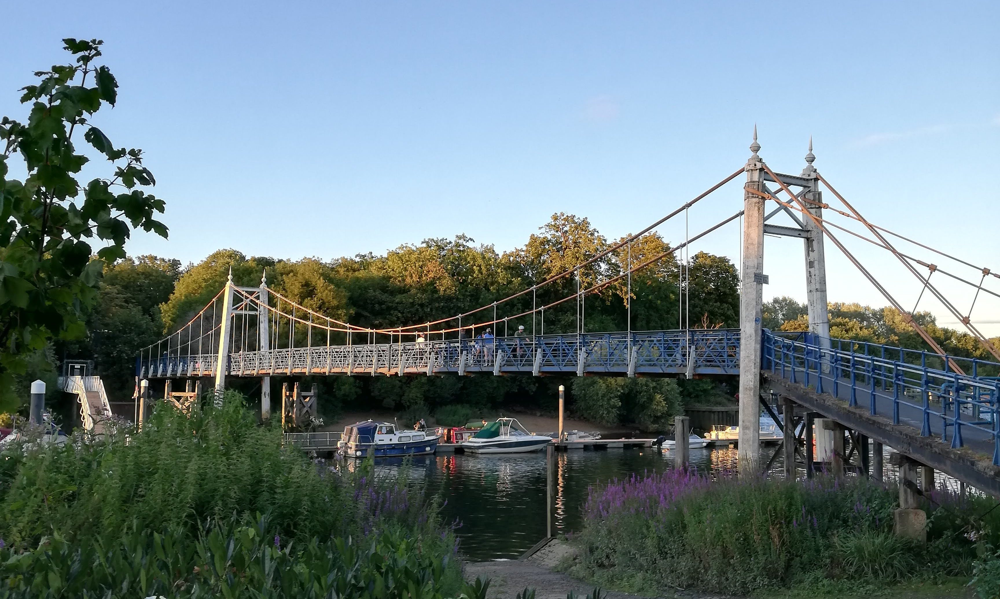

Samuel K. Ahmed
Introduction
Hi! I'm a lecturer at the University of Amsterdam (UvA), specialising in phonetics, phonology and speech processing.
My research (when I do it) focuses primarily on vowel harmony and adjacent topics, e.g. the acoustics of ATR in languages with ATR vowel harmony. I'm also a problem author and reviewer in the Problem Committee of the International Linguistics Olympiad. Outside of linguistics, I have a hobby of creating puzzles and games in various media.
Teaching
I teach the following courses at the UvA:
- Speech Processing
- Phonetics
- Research Methods and Statistics
- Transcription
- Specialization Linguistics (Phonetics & Phonology)
- Linguistic Theories (Optimality Theory)
In addition, I've supervised 3 BA theses, primarily on phonology.
I also taught a bit at Leiden University:
- Phonology 1
- Phonetics of English
- Phonology of English
Research
Some of my research interests include:
- Phonology of vowel harmony
- Acoustics of ATR
- Subsegmental representations
My MA thesis investigated the vowels [e o] and [ɪ ʊ], which are easily confused by linguists working on African languages. The study investigated a variety of potential techniques for identifying if a given set of vowels in a language was [e o] or [ɪ ʊ], using the case study of Boa-Leboale, a Bantu language spoken in the northern DRC, whose ATR harmony system does not clearly prefer one analysis over another. I plan to pursue a PhD to continue this line of research, most likely using a machine learning approach.
Linguistics Olympiads
Since 2018, I have been volunteering as a member of the Problem Committee for the International Linguistics Olympiad, a high school competition about deciphering and analysing linguistic puzzles. As of IOL 2025, I have (co)written a total of 9 problems for the IOL, and several others for national contests.
- Kewa compounds (IOL 2025)
- Kiranti verbal agreement (IOL 2025; team problem)
- Hadza genders (IOL 2024)
- Guazacapán Xinka verbal derivation (IOL 2023)
- Nǀuuki focus constructions (IOL 2022; co-written with Eimear McKnight)
- Kilivila classifiers and demonstratives (IOL 2021)
- Zuni compounds (IOL 2021; co-written with Elysia Warner)
- Nooni tenses and calendar (IOL 2019)
- Yurok colour terms and vowel harmony (IOL 2019; co-written with Boris Iomdin)
Other projects
In 2023, I made Woordhex, a Dutch-language version of the New York Times Spelling Bee. Other games are at various stages of development, and might be released at some point.
Contact
My university email address can be found on my UvA profile page.
